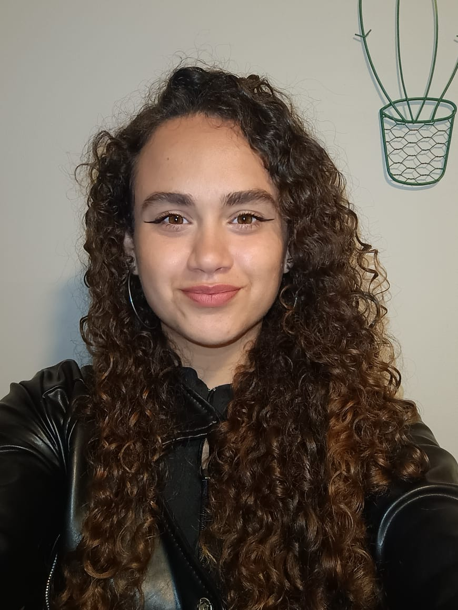
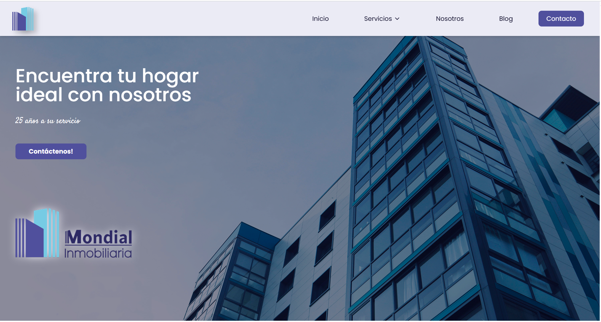
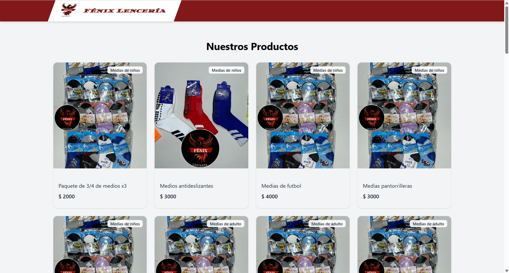

Lenguajes
HTML
CSS
JavaScript
Java
TypeScript
PHP
SQL
Soy Fiamma Brizuela, técnica en Desarrollo de Software. Trabajo con Java, React, TypeScript, Node.js y Spring Boot para crear productos web funcionales, responsive y enfocados en una buena experiencia de usuario, cuidando tanto la lógica como la forma en que se perciben.

Soy egresada de la Tecnicatura en Desarrollo de Software de la Universidad Tecnológica Nacional. Estoy dando mis primeros pasos profesionales en el desarrollo web, con experiencia en proyectos académicos y proyectos reales publicados.
Me destaco por combinar aprendizaje rápido, buena comunicación, trabajo en equipo y foco en entregar soluciones claras. Busco oportunidades donde pueda seguir creciendo como desarrolladora y aportar valor desde el producto, la implementación y la experiencia del usuario.
Estas son las herramientas que más utilicé en mis proyectos de estudio y desarrollo web.
Una selección de experiencias donde apliqué frontend, diseño responsive y lógica de negocio.
Los trabajos que mejor representan mi perfil actual.

Desarrollo de una plataforma inmobiliaria profesional con catálogo dinámico, filtros de búsqueda, carruseles de imágenes y diseño responsive. El objetivo fue presentar propiedades de forma clara y facilitar la exploración del usuario.

Catálogo web de productos orientado a mostrar prendas de manera visual, ordenada y adaptable a múltiples dispositivos. Aunque es una demo en evolución, refleja mi interés por interfaces limpias y experiencias de compra claras.
Desarrollos donde practiqué arquitectura, CRUD y lógica full stack.
E-commerce full stack con gestión de instrumentos, carritos, pedidos, autenticación por roles, estadísticas y exportación de datos. Proyecto unipersonal realizado con backend en Spring Boot y frontend en React + TypeScript.
Aplicación web para gestionar empresas y noticias con operaciones CRUD y búsqueda. Proyecto académico enfocado en backend con PHP, persistencia en MySQL e integración con frontend en HTML, CSS y JavaScript.
Sistema web para administrar pedidos, clientes y productos, con búsquedas avanzadas y arquitectura full stack. Desarrollado con Node.js, Express, TypeScript y MySQL.
Cursos que acompañan mi perfil técnico con herramientas de diseño, comunicación visual y programación.

Casa del Futuro

Casa del Futuro
_page-0001.jpg)
Mendoza Futura Digital

Casa del Futuro